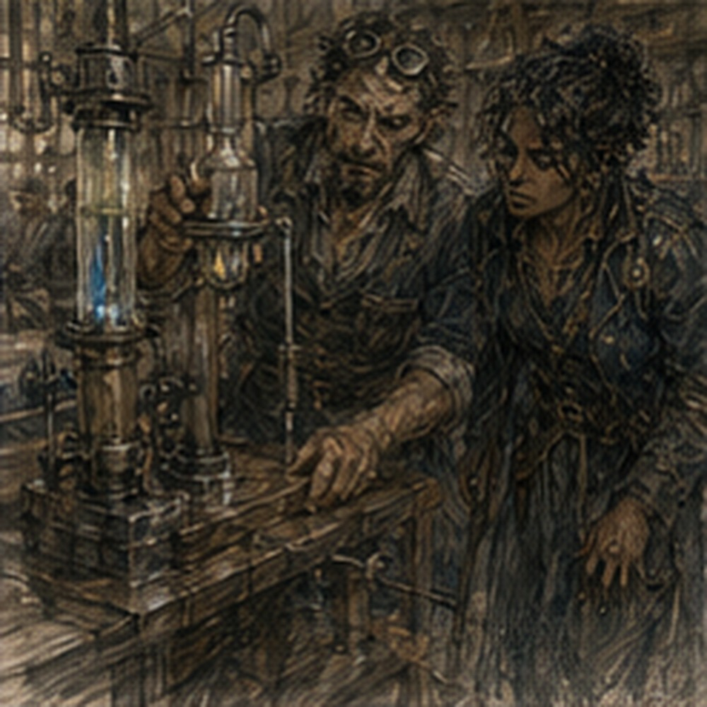

Arlo was not testing my regulator. He was using it to hold up a shelf.

I stood in the workshop doorway with the wrapped improved piece in my hand and watched a narrow brass regulator, almost identical to mine, wedged beneath the left corner of a wooden rack. The rack held ceramic cups. One cup was cracked. Two were marked with charcoal. A third contained screws. Arlo looked up from a bench.
“You’re late.”
“You sent yesterday.”
“Yes.”
“I was in Darrowmere.”
“I heard.”
“You knew that when you sent the message?”
“No.”
“Then I am not late.”
“You are here after I needed you.”
“That is a different accusation.”
“Yes.”
He went back to work. I entered. The workshop had changed. Not dramatically. The same benches. Same kiln smell. Same metal filings in the floor cracks. Same collection of tools arranged according to a system I still could not infer. But one wall now held six regulators instead of two. Three brass. One dark iron. One ceramic-bodied.
One that looked like it had been made by someone angry at circles. Arlo had not been waiting for me. Good. I set my wrapped regulator on the only clear corner of the bench. He pointed without looking.
“Not there.”
I moved it.
“Why?”
“Hot.”
I touched the bench. Hot. Young reflexes pulled my hand back before thought finished. Arlo looked over.
“Functional?”
“Yes.”
“Your hand says otherwise.”
“Bench.”
“Your wrist.”
Right.
LIMITED CASTING.
“Small, low-load only.”
“How small?”
“Coin-sized has been clean.”
“How many?”
“Three yesterday. Two today.”
He stopped filing.
“Today?”
“Hessa.”
“Symptoms?”
“Pressure after five breaths.”
“Then you are not casting.”
“I know.”
“Good.”
Everyone liked the restriction except me. Arlo wiped his hands on his apron.
“Give me the piece.”
I unwrapped it. He took it. No ceremony. Turned the adjustment screw twice. Held it to the light. Then placed it beside another regulator. Mine looked better. Not prettier. More finished. The channel edges were cleaner. The brass body had been filed down around the housing. The screw sat tighter. Arlo had added two tiny marks near the collar.
“What changed?”
“Everything small.”
“That is not useful.”
“It is accurate.”
He picked up the other regulator.
“This is the first fixture.”
Then mine.
“Second fixture.”
He pointed to the shelf support.
“Third.”
I stared at the regulator under the shelf.
“You improved the fixture three times.”
“Four.”
“Where is four?”
He pointed at the kiln. A woman I had not noticed was kneeling beside it. She wore a leather apron over a blue shirt and had both arms inside the open lower access panel. Not literally inside. Up to the elbows. Enough. She looked over.
“Don’t point at me.”
Arlo lowered his hand.
“Vessa.”
I knew the name. Arlo’s shop. Chalk notes. Fixture work. She had been part of the place before I understood the place. Vessa pulled one arm free.
“Greg?”
“Yes.”
“The regulator boy.”
“No.”
Arlo said, “Yes.” I looked at him. He had already returned to the bench. Vessa smiled.
“Good. Hold this.”
She handed me a metal plate. It was heavier than expected. My nineteen-year-old wrist dipped. I caught it with both hands. She noticed. Did not comment.
“Flat,” she said.
I held it flat. She slid back under the kiln.
“What am I holding?”
“Door plate.”
“Why?”
“Because I need both hands.”
Reasonable. Arlo set three regulators in a row.
“Comparison.”
I looked at the plate.
“Now?”
“Yes.”
“I am occupied.”
“Yes.”
That was apparently not contradictory. Arlo connected the first regulator to a small hand-pump assembly. No mana. Good. A glass tube rose from the apparatus with ink marks at regular intervals. He pressed the pump. Air moved through. A bead inside the tube climbed. Stopped. He wrote a number. Second regulator. Pump. Bead. Number. Mine. Pump. Bead. Number. He frowned. I became interested.
Vessa said from beneath the kiln, “Plate.” I had tilted it. I corrected. Arlo pumped again. Same result.
“What?”
He pointed at the glass tube.
“Same band again.”
I moved closer.
“Too narrow?”
“Narrower than the other fixtures.” Hostile city.
“What is wrong with the number?”
“Too good.”
I shifted my grip on the plate. That phrase had caused problems before.
“How too good?”
He showed me. I understood enough of the marks. The first regulator had variable low-flow behavior. The second was tighter. Mine held a narrower band. Much narrower.
“That is good.”
“Yes.”
“You said too good.”
“Yes.”
“Explain.”
“No.”
I stared. He picked up mine. Turned the screw. Pump. Number. Turned. Pump. Number. Again. Again. The numbers stayed close. Not identical. Close. Arlo’s frown deepened. Vessa said, “If you make him more interested, he’ll drop my plate.”
“I will not.”
My arms were beginning to tire. Not much. Enough. The plate was not designed to be held for this long. My body knew before my pride did. Vessa’s hand emerged.
“Give.”
I gave. She took the full weight one-handed from an awkward angle. Competence. Not magical. Just practiced. I liked watching it. She fitted the plate into place. Two bolts. Turn. Check. Loosen. Shift. Turn. No wasted motion.
I nearly asked why she had loosened the first bolt after tightening it. Did not. She was working. Arlo said, “Greg.” I looked back. He had disassembled my regulator.
“You could ask.”
“You brought it for comparison.”
“That does not imply destruction.”
“It is not destroyed.”
“It is in five pieces.”
“Six.”
He lifted the collar. Six. I moved closer. The internal channel looked different. Not the shape I remembered. Arlo had added a tiny recess near the inlet.
“What is that?”
“Problem.”
“What problem?”
He pointed at the first regulator.
“Low flow pulses.”
“Yes.”
“Not from supply.”
“How do you know?”
“Hand pump.”
Right. No mana source. No spell variability. Mechanical isolation. Good.
“So internal.”
“Yes.”
“Cavitation?”
He looked at me.
“What?”
Wrong word. Later word? Different field? I searched memory. Fluid behavior. Bubbles. Pressure. Not necessarily useful here.
“Nothing. Air pocket?”
“No.”
“Flex?”
“No.”
“Valve chatter?”
He paused.
“Closer.”
Good. He held the tiny adjustment screw between finger and thumb.
“At low opening, the screw does not stay where the fixture says it stays.”
“Movement?”
“Very small.”
“From pressure?”
“From everything.”
He tapped the bench.
“Vibration. Pump. Hand. Floor.”
I looked at the regulator.
“So the recess stabilizes the screw?”
“No.”
He pointed to the recess.
“It gives the flow somewhere to be wrong.”
I stopped. That was interesting.
“Explain.”
He sighed. Not annoyed. Arlo’s version of pleased.
“The first fixture tried to make the opening exact.”
“Yes.”
“It isn’t.”
“Yes.”
“The second made the screw better.”
“Yes.”
“Still isn’t.”
“Yes.”
“The third changes the channel around the bad opening.”
I looked at the recess. A tiny side volume. The flow could fluctuate at the screw and then settle before the outlet. Not fixing the unstable part. Absorbing its error. My brain lit. Buffer. No. Different. Similar. I thought of sinkstone. Cheap buffers always lie about what they keep. Not now. Arlo was here. This was his thing.
“What did the fourth fixture change?”
Arlo looked toward Vessa. She had closed the kiln panel.
“Ask her.”
I did.
“What did the fourth fixture change?”
Vessa stood.
“Arlo.”
He looked offended. She wiped soot from her forearm.
“The first three held the body too hard.”
Arlo said, “Not too hard.”
“They marked the brass,” Vessa said.
“Cosmetic,” Arlo said.
“They distorted the housing,” Vessa said.
“Barely,” Arlo said.
“Enough,” Vessa said.
Arlo looked at me.
“Sometimes.”
Vessa continued.
“Fourth holds the collar and lets the body sit.”
“Less clamping force?”
“Different clamping.”
“Why?”
“Because he kept making the same good regulator in the fixture and a worse one after he took it out.”
I looked at Arlo. He did not deny it. That was funny. I smiled.
“Do not,” he said.
“I said nothing.”
“You made the face.”
Vessa laughed again. Arlo pointed at her.
“You missed it too.”
“Twice.”
“Three.”
“Second one was your filing.”
“It was not.”
Their argument continued without me. Good. I looked at the six regulators on the wall. The progression was visible now. Not invention. Iteration. Fixture. Measurement. Failure. Change. Another failure. Someone else noticing the housing distortion. Change again. My original contribution had been small. A question about low flow. A use case. Maybe an insistence. Arlo had done the rest. No. Arlo and Vessa.
Probably Tere somewhere before that. The workshop had grown around the problem without me. I liked that more than I expected.
“What do you need from me?” I asked.
Arlo stopped arguing.
“Nothing,” Arlo said.
I blinked.
“You sent for me.”
“Yes.”
“For nothing?”
“For the regulator.”
“You said comparison.”
“I compared it.”
“You could have asked someone to bring it.”
“Yes.”
“Then why me?” I asked.
He looked confused by the question.
“You own it,” Arlo said.
That was all. Not expertise. Not future knowledge. Property. I had built a larger role for myself because I was used to being useful. Embarrassing. Vessa said, “He also wanted to know if you broke it.” Arlo looked at her.
“That was secondary.”
I looked at him.
“You expected me to break it?”
“You use things.”

“That is what they are for.”
“Yes.”
“Then why phrase it like criticism?”
“It wasn’t.”
Right. Clean relationship to work. I picked up the first regulator.
“Can I?”
Arlo nodded. I turned the screw. Felt the loose point. Then mine. Tighter. Not because the screw itself was dramatically better. Because the outlet behavior cared less about the screw’s tiny instability.
“Does it work with liquid?”
Arlo said, “Some.”
“Which?”
“Water.”
“Oil?”
“Bad.”
“Why?”
“Thick.”
“Alcohol?”
Vessa said, “Better use for alcohol.” Arlo ignored her.
“Not tested.”
“Mana solution?”
“Not tested.”
My attention sharpened.
Arlo set the regulator beside the hand pump.
“Mechanical behavior first. Mana after we know what this does without it.”
“That is sensible.”
“That is sensible.”
“Yes.”
“I dislike it.”
“Yes.”
Arlo began reassembling mine. I watched his hands. Fast. Not elegant. Effective. He dropped the collar. Caught it against his apron before it hit the floor. Young me would have pretended not to notice. Old me would have categorized dexterity and failure rate. Present me laughed. Arlo looked at me.
“What?”
“Nothing.”
“You laughed.”
“Yes.”
“Why?”
“You dropped it.”
“I caught it.”
“That is why.”
He stared. Vessa said, “He’s been outside too much.” Maybe. Arlo finished the assembly. Then handed me a small paper packet.
“What?”
“Washers.”
I opened it. Six thin rings. Different thicknesses.
“For?”
“Testing.”
“I cannot cast.”
“Not magic.”
Right.
“What do I test?”
“Use it.”
“With what?”
He shrugged.
“Whatever you use it for.”
“That is dangerously broad.”
“Yes.”
“Do you want measurements?”
“If you can.”
“Failure notes?”
“Yes.”
“Temperature?”
“If relevant.”
“Flow medium?”
“Yes.”
“Orientation?”
“Yes.”
“Duration?”
“Yes.”
“External vibration?”
Arlo paused. Then nodded.
“Good.”
I smiled. There it was. Not a lesson. A problem. My body leaned toward the bench before I decided to. Arlo saw.
“You cannot stay.”
“What?”
“I have work.”
“So do I.”
“Not here.”
I looked around. Vessa had reopened the kiln panel. Arlo was already reaching for a ceramic-bodied regulator. A customer waited near the front now, holding a cracked lantern assembly. I had not heard him enter. The workshop did not need me.
“Fine.”
I wrapped my regulator. The customer stepped aside to let me pass. Then Arlo said, “Wait.” I turned. He held up the ceramic-bodied piece.
“Do you know why this fails?”
I looked. Hairline crack around the inlet. Dark staining.
“Heat?”
“No.”
“Pressure?”
“No.”
“Bad firing?”
Vessa said, “Careful.” I looked at her. She smiled. Arlo said, “Not firing.”
“Then I don’t know.”
He nodded.
“Good.”
“What?”
“I don’t either.”
He put it back on the bench. That was apparently the entire exchange. I waited. Nothing.
“You asked me just to see if I knew?”
“Yes.”
“Why?”
“You know strange things.”
Fair.
“Do you want me to think about it?”
“If you want.”
There. Permission. Not assignment. Not need. I looked at the crack again. Wanted to. Very much. Also sword. Food. Hessa’s restriction. Antonius’s warning. Sinkstone. Silas Marris. Berren. The crack was small. Interesting. Not mine.
“I’ll think about it later.”
Arlo nodded. No disappointment. That made leaving easier. Outside, late afternoon had turned the workshop lane gold. My arms still remembered the weight of Vessa’s kiln plate. A mild tremor lived in the muscles near my elbow. Not mana. Just fatigue. Nineteen-year-old body. I rolled my shoulders. It felt good. That surprised me. Not the soreness. The work. Holding something heavy because another person needed both hands.
No optimization. No leverage. No future consequence. Useful for thirty seconds. Then done. I walked toward the east market. The smith Alden had recommended occupied half an open-front shop between a cobbler and a seller of cooking pots. A woman was already at the stone.
My sword lay nowhere because I had not given it to her yet. She was sharpening a butcher’s cleaver. I waited. She did not look up. Good. The wheel hissed. Metal. Water. Wheel. Her left hand controlled angle. Right hand pressure. Three passes. Check. Two passes. Check. She wiped the blade. Handed it to the butcher.
“Tomorrow for the other two.”
“I need one tonight.”
“You have one.”
“I need two.”
“Then come tomorrow.”
He paid. Left. She looked at me.
“Sword.”
I handed it over. She drew it halfway. Looked at the chip.
“Two copper.”
“Alden said.”
“Red scarf?”
“Yes.”
“Three copper.”
“He said.”
“He talks.”
“Yes.”
She pulled the blade fully.
“Tomorrow.”
“He said basic edge today.”
She looked at the light. Then at me.
“Tomorrow.”
“Why?”
“Because I’m done.”
I looked at the wheel. Still spinning. Three blades on the rack. A hammer on the bench. Shop open.
“You are open.”
“Yes.”
“But done.”
“Yes.”
I understood the words. Not the system. She pointed at her right wrist. Slight swelling. Not dramatic.
“Tomorrow.”
There. Physical limit. Not mine. Hers. I handed her two copper. She put the sword behind the counter. No negotiation. Old me would have priced urgency. Young me might have argued because I wanted the sword. Present me had another swordless evening. Fine.
“Tomorrow.”
She nodded. I left. Halfway down the lane, I realized I had not asked her name. That was probably healthy. Not everyone needed to become a person I collected. Then I stopped. No. That was stupid. Names were not ownership. I turned back.
The butcher had been replaced by a pot seller asking about a knife. The smith was already working. I could interrupt. I did not. Tomorrow. At the corner, someone called my name. I turned.
Jorren sat outside a narrow drink shop with one boot on the empty chair opposite him. He lifted his cup.
“You look unemployed.”
“I have done three jobs today.”
“You look bad at them.”
“I was excellent at beans.”
He moved his boot. Invitation. I looked at the regulator under my arm. Arlo had work. Smith had stopped. Antonius had no urgency. Hessa had restricted casting. I could go home and write notes about sinkstone. I could think about the ceramic crack. I could list questions for Edrin. I could calculate Silas Marris possibilities. Jorren drank. Did not repeat the invitation.
I sat.
“What is that?” he asked.
“Regulator.”
“Magic?”
“Eventually.”
“Now?”
“No.”
“Good.”
He pushed a second cup toward me. I looked at it.
“You ordered for me?”
“No. Man left.”
“Why?”
“Wife came.”
“Emergency?”
Jorren shrugged.
“She looked like one.”
I drank. Bitter. Cheap. Good.
“What did you do today?” I asked.
“Worked.”
“At?”
“Dock gate.”
“Why?”
“Money.”
“Anything interesting?”
“No.”
I waited. He looked at me.
“What?”
“Nothing happened?”
“Cart axle broke.”
“That is something.”
“Not to me.”
“What was in the cart?”
“Turnips.”
“How many?”
Jorren stared. I drank. He laughed.
“There he is.”
“What?”
“You went away.”
“I am sitting here.”
“Your face left.”
Everyone. Everyone could see it.
“What did it do?”
“Turnips became important.”
“They might be.”
“They weren’t.”
“How do you know?”
“Because they were turnips.”
I considered arguing. Did not. Jorren leaned back.
“You fight monsters?”
“Yes.”
“Good?”
“No.”
“You alive?”
“Yes.”
“Alden?”
“Yes.”
“Then decent.”
That was not how evaluation worked. It was how his did. He drank. I drank. The regulator sat under my arm. The ceramic crack waited in Arlo’s workshop. My sword waited behind a smith’s counter. Sinkstone waited for Edrin’s tests. Silas Marris existed whether I investigated them or not. For perhaps ten minutes, nothing required me. This was inefficient. I stayed anyway.